Latent Studio
A User-Facing Image Generation Web App
Projekt-Metadaten
Background
Over the past few years artificial intelligence has become more and more present in our daily lives. Many found new opportunities in this evolving technology, from getting general tasks done faster to supporting the creative process. Since AI became mainstream image generators flooded the internet. Nowadays everybody is able to generate a picture from seemingly nothing. However most of these generators only let the user input a text description (a so called “prompt”) for the motive they want to create. In these applications the user might be able to change the model or aspect ratio, but further control over the resulting image is often lacking. To counter that the web app Latent Studio gives the user more possibilities to influence the final result. With easy to understand explanations accompanying the customizable inputs, the web app gives the user the opportunity to understand the process of image generation better, making the process more purposeful.
Abstract
Latent Studio is a web app created with the help of Google Colab, Gradio, Cursor and Gemini. It is based on the architecture of Stable Diffusion 1.5 and focuses on text-to-image generation. The app gives the user not only control over the prompt: To optimize the user experience, it exposes several easy to understand parameters within a clean interface, for more control over the resulting image.
The user is able to switch between the basic Stable Diffusion model which sets a well trained foundation and the Dreamshaper model (created by Lykon) for more stylized creations.
On top of the model, the user can choose to add a smaller fine tuned sub-model to get a specific look: The so called Low-Rank Adaptation also known as LoRa. How much the selected LoRa influences the result can be changed via the slider “LoRa Strength” that appears after selection.
After that the user can write a prompt for what they want to see in the image and a negative prompt for what they want to avoid. If a LoRa is selected, the according trigger word will automatically get added to the prompt.
How many times the AI should improve the image can be changed with the “Steps” slider. Next to it the user can define how strictly the AI should follow the prompt using the “CFG” (Classifier-Free Guidance) slider. The seed for each generation can be fixed for comparable results or randomized for more variety.
Lastly if the user has a specific composition or object in mind they want to include as accurately as possible, they can enable the “ControlNet”. Afterwards the image that should be used as reference can be uploaded. The amount of influence this image has on the result can be changed with the “Control Strength” Slider. For this specific ControlNet the Canny Edge method is used, meaning that the edges of the reference image get extracted to guide the diffusion process. The resulting Canny Edge Map gets output alongside the generated image and its meta data.
Approach
The general structure of the project was vibe coded, mostly as a notebook within Google Colab with support from Google Gemini and Claude. Later in the process I also used Cursor due to free plan limitations of Google Colab. In the following I will explain the code structure that resulted in this project:
1. Environment Setup
The purpose of this section is to prepare and install the external code libraries necessary to run machine learning models. Since image generation is not a light task and can involve a lot of calculations, the fastest available processor needs to be detected and implemented. Since I had to switch to a local environment (and replace Google Colab temporarily with Cursor) the notebook is currently configured for macOS. It detects and activates Apple Silicon GPU and falls back to NVIDIA GPU (CUDA) or your system's CPU if running somewhere else.
2. Model Initialization
Here the base model Stable Diffusion 1.5 and the model Dreamshaper get loaded into the directly from the AI community platform Hugging Face. Furthermore the ControlNet gets initialized: It loads a Canny Detector preprocessor along with the Canny ControlNet model. This allows the AI to capture outlines from a reference image and use them to guide the layout of the newly generated image.
3. LoRa
Low Rank Adaptation (short LoRa) is a technique that lets you inject specific styles into a base model without having to retrain the entire network. They are also helpful to generate a specific object consistently with high detail. I previously trained two style LoRas in a separate Google Colab notebook, resulting in according .safetensor files that get loaded in this section. In my dataset used for training I added text files describing every image individually. All the text files have one unique word in common, when this specific word is written inside the prompt, the LoRa gets activated.
A LoRa is especially useful, if the base model can not generate an object or image style sufficiently. I trained two specific styles that were lacking in the base model and could not be displayed as well as I would have liked. During the conceptual phase it is also important to have in mind that you need a large enough dataset, to base the training on. The images should have varying subjects in it but keep the overall style as consistently as possible so that the AI can learn what to keep.
I wanted to add a style that is reminiscent of old computer graphics but still adds a cute touch. I was specifically drawn to characters and objects from Nintendo games that were popular in the early 2000s since I grew up during that time and played those games. I found a lot of different images fitting this exact style, with bright colors and hard edges resulting from the limited number of polygons that were possible to use back then. Every image in this dataset displays one item or character on white background with the same visual style. I used 48 images in total with describing captions for each image in the form of a simple .txt file. This helps the LoRa differentiate what it should recognize as part of the style and what it should not include. This way the model does not have to guess, resulting in better training.
The trigger word I defined for this LoRa is “lpyx7 style”.
Dataset examples
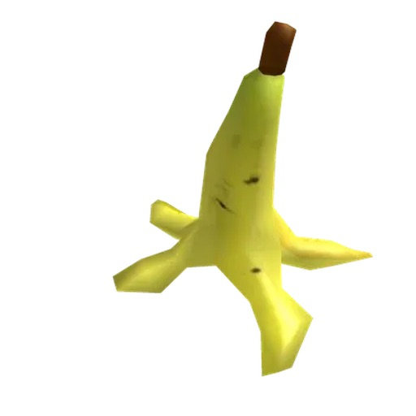
a yellow banana peel splayed open, lpyx7 style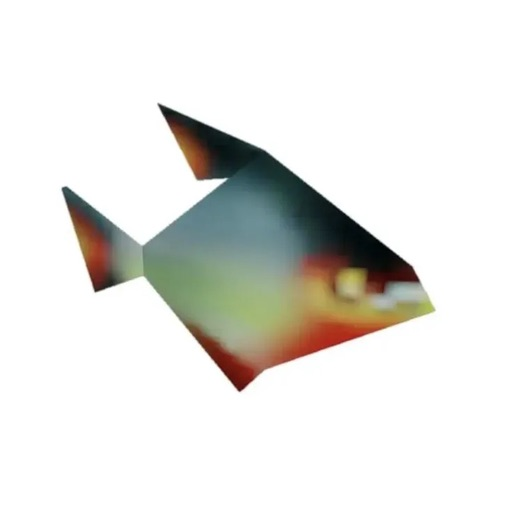
a flat angular dark-colored fish, lpyx7 style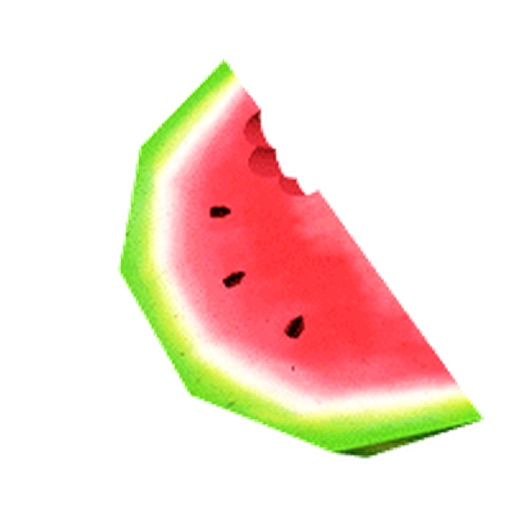
a slice of watermelon with black seeds and red flesh, lpyx7 style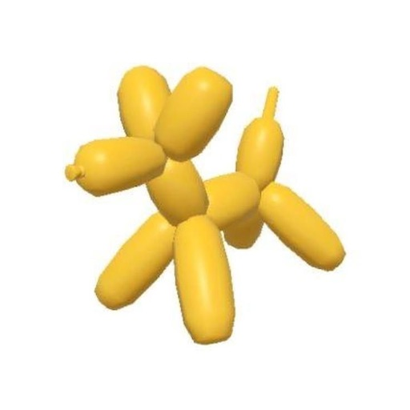
a yellow balloon dog sculpture, lpyx7 styleExample Generations
LoRa Strength: 1 Prompt: A palm tree on a deserted island low poly lpyx7 style
Negative Prompt: / Seed: 150 Steps: 40 CFG: 6.5

LoRa Strength: 1.3 Prompt: a watermelon laying on a forest floor lpyx7 style
Negative Prompt: / Seed: 49 Steps: 40 CFG: 7.5
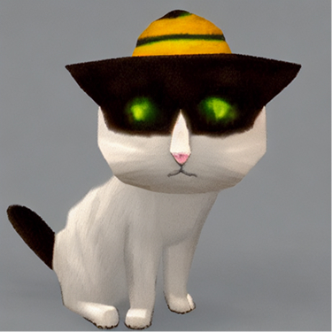
LoRa Strength: 1 Prompt: a cat wearing a hat lpyx7 style
Negative Prompt: / Seed: 50 Steps: 40 CFG: 7.3
The Found Footage LoRa on the other hand needs “night” in the prompt for the desired effect. Words meaning similar things like “dark” or “darkness” do not work, they just made the palm tree a bit darker and the image overall a bit less saturated (the colors get a bit closer to the trained style but not quite enough). Using “sunlight, daytime, daylight” in the negative prompt also does not work.
The trigger word I defined for this LoRa is “ffz8 style”.
Dataset examples
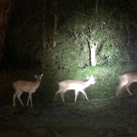
a yellow banana peel splayed open, lpyx7 style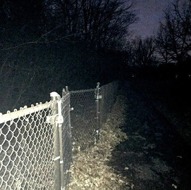
a flat angular dark-colored fish, lpyx7 style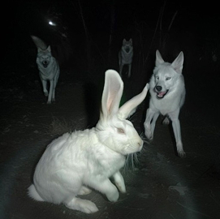
a slice of watermelon with black seeds and red flesh, lpyx7 style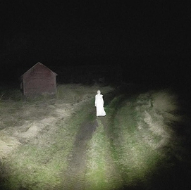
a yellow balloon dog sculpture, lpyx7 styleExample Generations
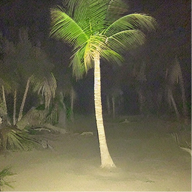
LoRa Strength: 1.3 Prompt: A palm tree on a deserted island at night ffz8 style
Negative Prompt: / Seed: 150 Steps: 40 CFG: 6.5
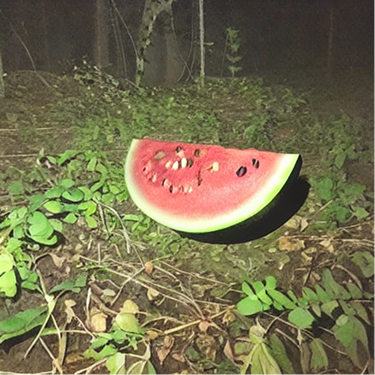
LoRa Strength: 1.3 Prompt: a watermelon laying on a forest floor at night ffz8 style
Negative Prompt: / Seed: 49 Steps: 40 CFG: 7.5
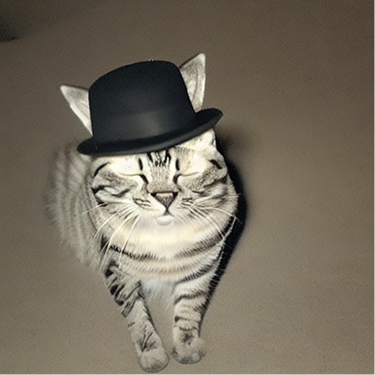
LoRa Strength: 1.3 Prompt: a cat wearing a hat at night ffz8 style
Negative Prompt: / Seed: 50 Steps: 40 CFG: 8.4
4. Gradio Interface
To bring everything to life I used the Python package Gradio, that makes it possible to quickly build a demo of the web application. Everything that got loaded and all the LoRas trained before are built into a clean interface for the user to navigate through and explore the different options.
Findings
Use extra descriptive words in prompt for best LoRa results
The Low Poly LoRa sometimes works well with just the trained trigger word (“lpyx7 style”) added at the end of the positive prompt, but it works best if “low poly” is written in the prompt. I believe that is because the base model already knows the concept “low poly” and uses this knowledge alongside the LoRa. Both generations (with LoRa vs without LoRa) using “low poly” in the prompt look very similar. The image generated without the LoRa has slightly more detail in the background, but the subject looks very similar. The images generated with the Low Poly LoRa have harsher shadows and a solid or less detailed background. I think that happens because every image in the training data had a simple white background.
Example Palm tree
LoRa Strength: / Prompt: A palm tree on a deserted island
Negative Prompt: / Seed: 150 Steps: 40 CFG: 6.5
LoRa Strength: / Prompt: A palm tree on a deserted island low poly
Negative Prompt: / Seed: 150 Steps: 40 CFG: 6.5
LoRa Strength: 1 Prompt: A palm tree on a deserted island lpyx7 style
Negative Prompt: / Seed: 150 Steps: 40 CFG: 6.5
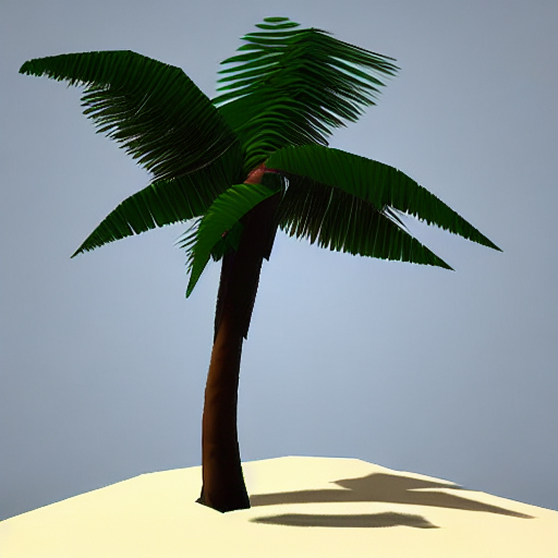
LoRa Strength: 1 Prompt: A palm tree on a deserted island low poly lpyx7 style
Negative Prompt: / Seed: 150 Steps: 40 CFG: 6.5
Example Watermelon
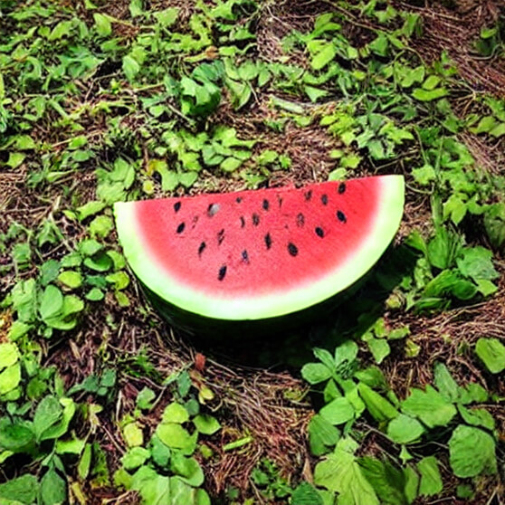
LoRa Strength: / Prompt: a watermelon laying on a forest floor
Negative Prompt: / Seed: 49 Steps: 40 CFG: 7.5
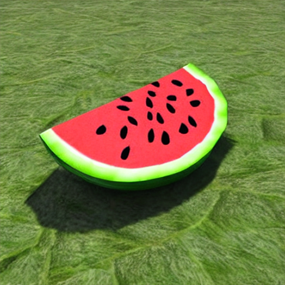
LoRa Strength: / Prompt: a watermelon laying on a forest floor low poly
Negative Prompt: / Seed: 49 Steps: 40 CFG: 7.5
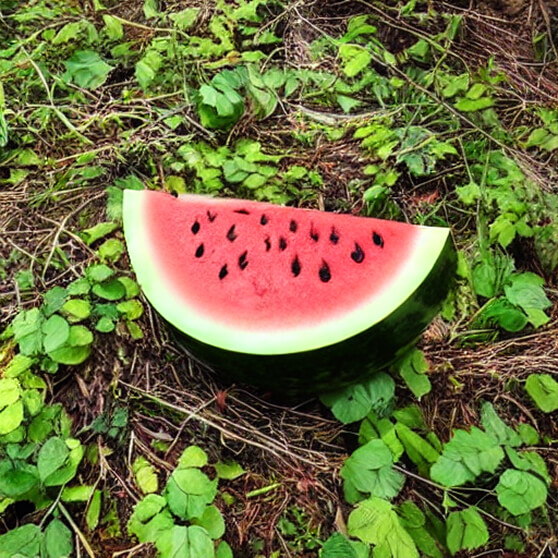
LoRa Strength: 1 Prompt: a watermelon laying on a forest floor lpyx7 style
Negative Prompt: / Seed: 49 Steps: 40 CFG: 7.5
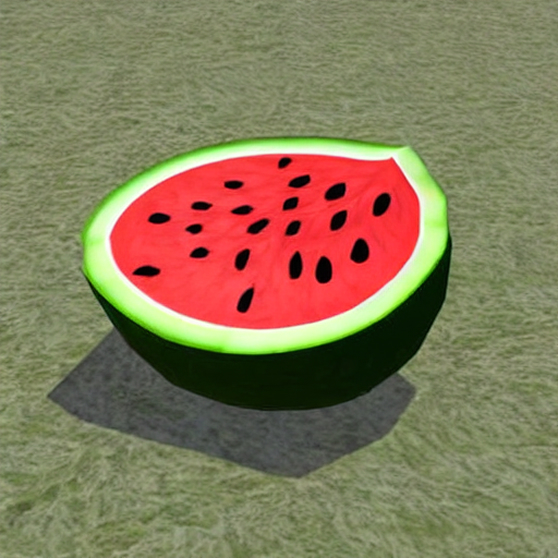
LoRa Strength: 1 Prompt: a watermelon laying on a forest floor low poly lpyx7 style
Negative Prompt: / Seed: 49 Steps: 40 CFG: 7.5
The Found Footage LoRa on the other hand needs “night” in the prompt for the desired effect. Words meaning similar things like “dark” or “darkness” do not work, they just made the palm tree a bit darker and the image overall a bit less saturated (the colors get a bit closer to the trained style but not quite enough). Using “sunlight, daytime, daylight” in the negative prompt also does not work.
Example Palm tree
LoRa Strength: 1 Prompt: A palm tree on a deserted island ffz8 style
Negative Prompt: / Seed: 150 Steps: 40 CFG: 6.5
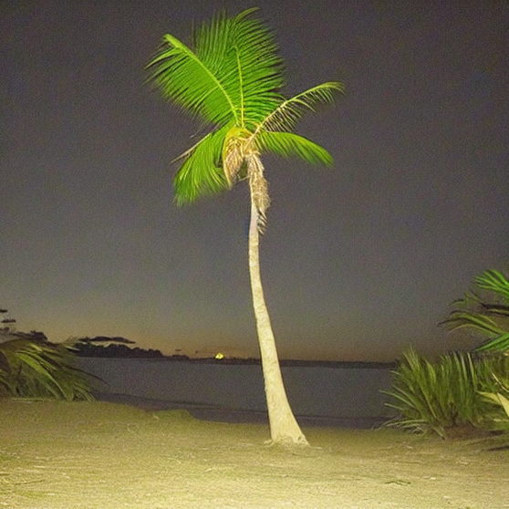
LoRa Strength: 1 Prompt: A palm tree on a deserted island at night ffz8 style
Negative Prompt: / Seed: 150 Steps: 40 CFG: 6.5
Example Water Melon
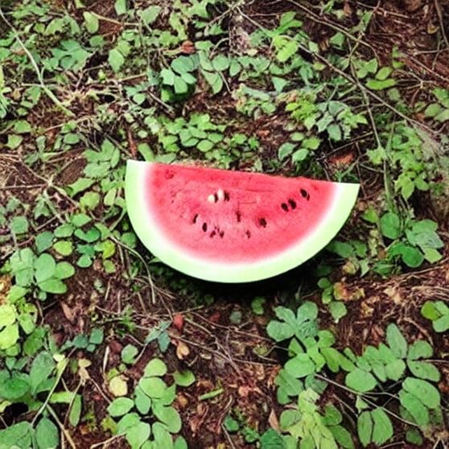
LoRa Strength: 1 Prompt: a watermelon laying on a forest floor ffz8 style
Negative Prompt: / Seed: 49 Steps: 40 CFG: 7.5
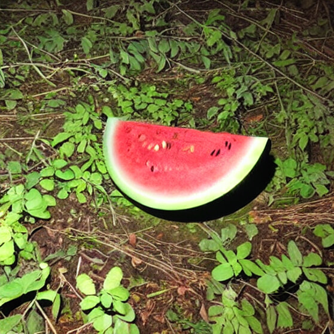
LoRa Strength: 1 Prompt: a watermelon laying on a forest floor at night ffz8 style
Negative Prompt: / Seed: 49 Steps: 40 CFG: 7.5
Testing other words and negative prompt
LoRa Strength: 1 Prompt: A palm tree on a deserted island in the dark ffz8 style
Negative Prompt: / Seed: 150 Steps: 40 CFG: 6.5
LoRa Strength: 1 Prompt: A palm tree on a deserted island, darkness ffz8 style
Negative Prompt: / Seed: 150 Steps: 40 CFG: 6.5

LoRa Strength: 1 Prompt: A palm tree on a deserted island, darkness ffz8 style
Negative Prompt: sunlight, daytime, daylight Seed: 150 Steps: 40 CFG: 6.5
LoRa Strength Limits
Another interesting thing I observed is that both LoRas have different limits regarding the LoRa strength. While the Low Poly LoRa already starts breaking beyond a strength of about 1.5, the Found Footage LoRa can go up to 2 on specific prompts and still create coherent images.
Example Palm Tree
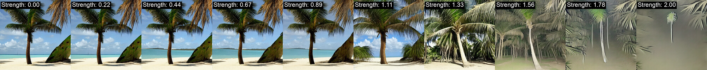
Example Watermelon
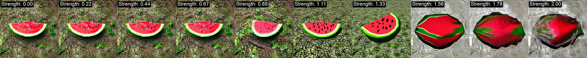
Setting the strength a bit higher makes the style the LoRas were trained on more visible, to the point where the extra descriptive words explained before are not needed anymore. The best results can be achieved when combining descriptive words with a higher LoRa strength setting.
Example Palm Tree
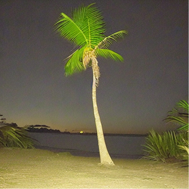
LoRa Strength: 1 Prompt: A palm tree on a deserted island at night ffz8 style
Negative Prompt: / Seed: 150Steps: 40CFG: 6.5
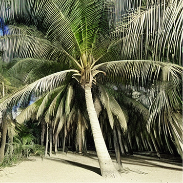
LoRa Strength: 1.6 Prompt: A palm tree on a deserted island lpyx7 style
Negative Prompt: / Seed: 150 Steps: 40 CFG: 6.5

LoRa Strength: 1.3 Prompt: A palm tree on a deserted island at night ffz8 style
Negative Prompt: / Seed: 150 Steps: 40 CFG: 6.5
Example Watermelon
LoRa Strength: 1 Prompt: a watermelon laying on a forest floor low poly lpyx7 style
Negative Prompt: / Seed: 49 Steps: 40 CFG: 7.5
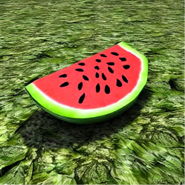
LoRa Strength: 1.3 Prompt: a watermelon laying on a forest floor lpyx7 style
Negative Prompt: / Seed: 49 Steps: 40 CFG: 7.5
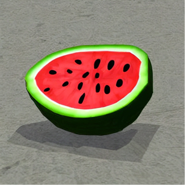
LoRa Strength: 1.1 Prompt: a watermelon laying on a forest floor low poly lpyx7 style
Negative Prompt: / Seed: 49 Steps: 40 CFG: 7.5
Inference steps and CFG scale comparison
The inference steps determine the number of denoising iterations the AI performs, where more steps gradually refine a noisy starting image into a more detailed final output.
The CFG (Classifier-Free Guidance) Scale controls how closely the model adheres to your prompt, with higher values forcing strict obedience to your text and lower values allowing the AI more creative freedom. Together, they balance the physical rendering quality of your image against its conceptual accuracy.
No LoRa selected
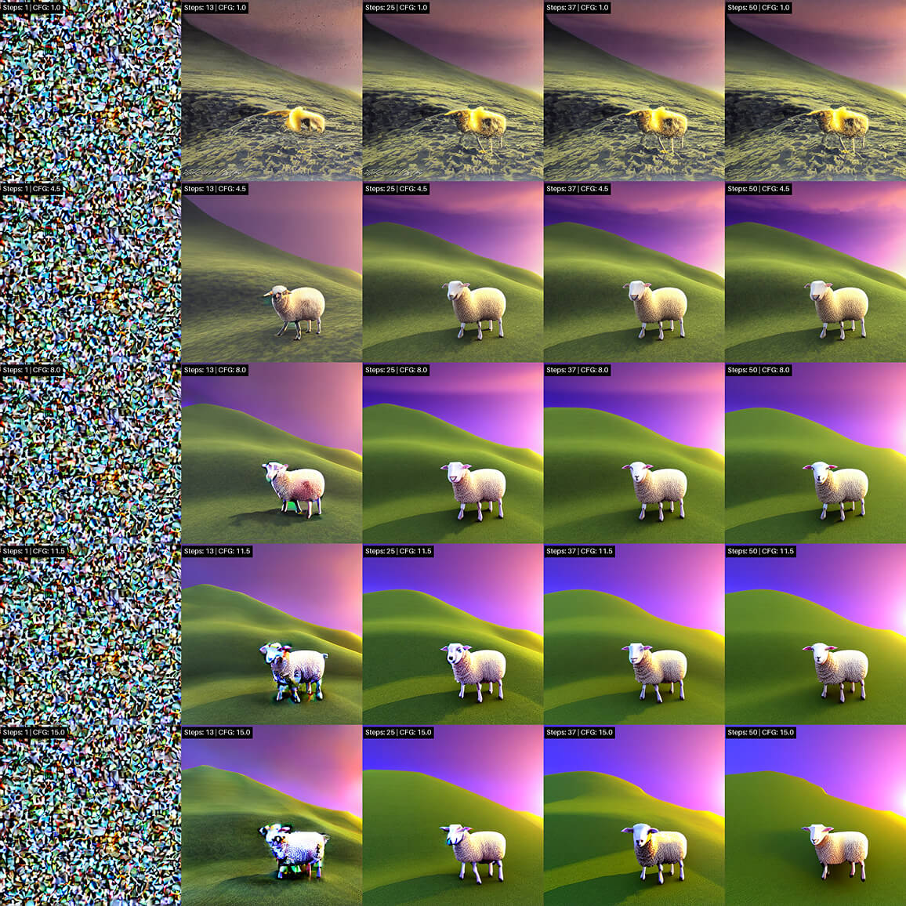
LoRa Strength: / Prompt: a sheep jumping on a hill low poly lpyx7 style
Negative Prompt: / Seed: 90 Steps: variable CFG: variable
Low Poly LoRa selected
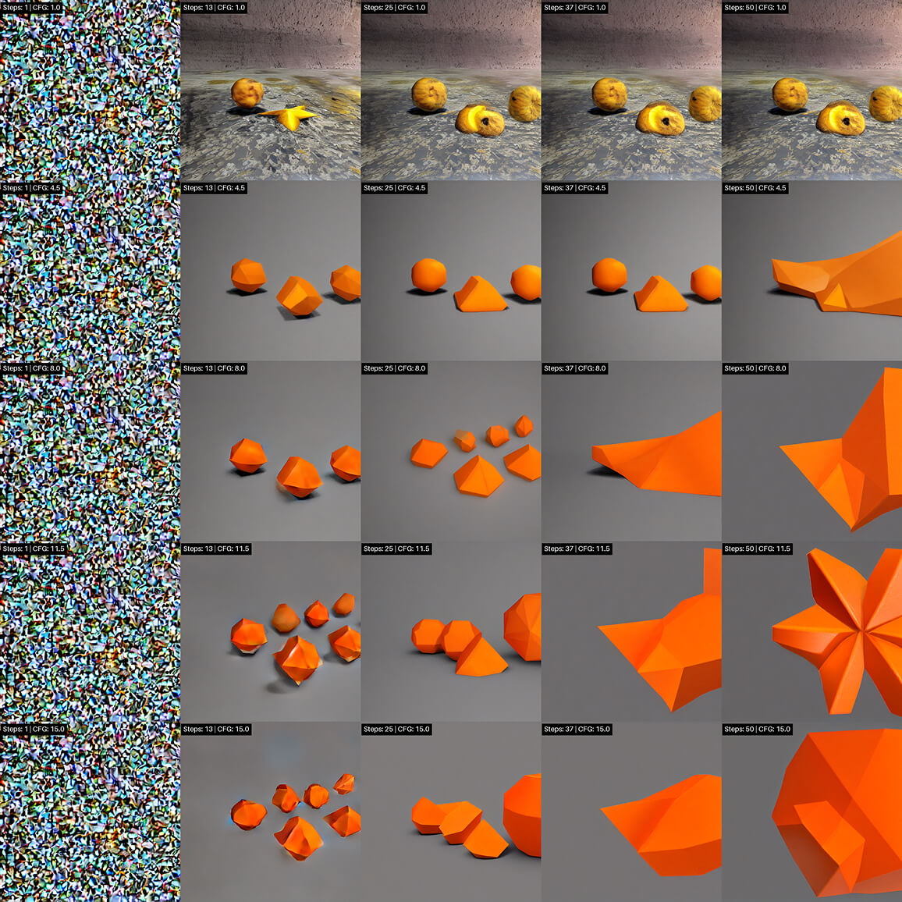
LoRa Strength: 1 Prompt: a cut open orange low poly lpyx7 style
Negative Prompt: / Seed: 90 Steps: variable CFG: variable
Found Footage LoRa selected
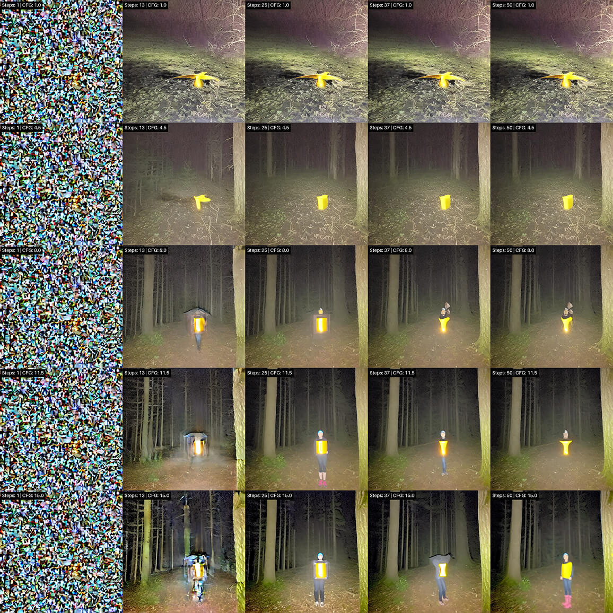
LoRa Strength: / Prompt: A big birthday present in a dark forest at night ffz8 style
Negative Prompt: / Seed: 90 Steps: variable CFG: variable
Difficulties
Failed LoRa
In the beginning I tried training a LoRa on the style of old CGI renderings specifically from the program Bryce. I thought it would be a nice concept to use this new AI technology to emulate the look of old computer graphics. Even though I liked the style I came to the conclusion that a big part of the appeal these references had, came from the overall composition and surreal objects placed in the scenes and less from the basic shaders, colors or lighting. The images I found were also too different from each other so that I had a hard time choosing which ones would work. This idea evolved into the Low Poly LoRa, for which I found better reference images with consistent style.
Bryce rendering Examples:
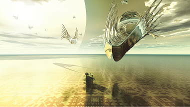
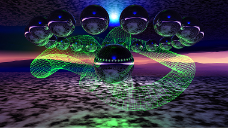
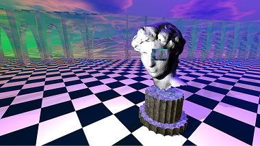
Modus Interactive’s Bryce Render Pack v1 © 2022 by Modus Interactive
Validations during training:
I already started training the model, here are a few process images from different epochs
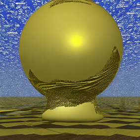
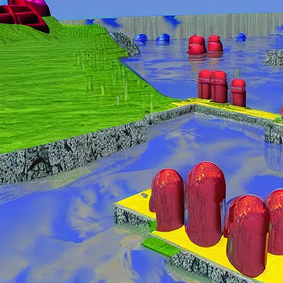
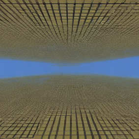
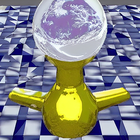
Trigger word
I had difficulty defining a fitting trigger word. During my first attempt at training the Low Poly LoRa I used the instance prompt “low poly sks” which I also added to every text file I uploaded for training alongside the images. The problem with this trigger phrase was, that I could not compare the image generated with the LoRa vs without the LoRa, since “low poly” always activated the Low Poly LoRa. This meant I had to remove these words from the prompt, resulting in much more realistic generations when the LoRa is inactive. I could not compare the low poly style the Stable Diffusion model inherently comes with to my trained LoRa which is why I decided to retrain with the new trigger word “lpyx7 style”. Because the AI has no prior bias towards the new word “lpyx7” it does not influence the generated images with ideas or concept it already knows. The word “style” helps the AI figure out what this new word represents, supporting the training stage.
Cropping and background
For the Low Poly dataset I used only images of objects or characters that centered on a white background with sufficient gaps towards the borders. When selecting this LoRa and generating an image, I realized that the subject is often cropped and placed way too big within the generated image. I found that using the canny edge function in the ControlNet on a low setting can sometimes fix this issue. Also the background is almost never purely white, it often has a light structure or color.
Societal Impact
AI is getting more involved in our lives every day. Because of that it is important for people to understand the technology behind it, at least on a surface level. The goal of this project is to make image generation, specifically the stable diffusion pipeline, more understandable for people who usually do not dive into the inner workings of AI. Explaining different parameters that can influence the final output and letting the user explore what settings fit best for different usecases helps reaching that goal.
Credits
This project is built using models and tools:
Stable Diffusion 1.5 – Developed by Runway and Stability AI.
DreamShaper – The fine-tuned model created by Lykon.
Gradio – The web interface framework developed by Hugging Face and the open-source community. The spelling was checked and altered by Claude.